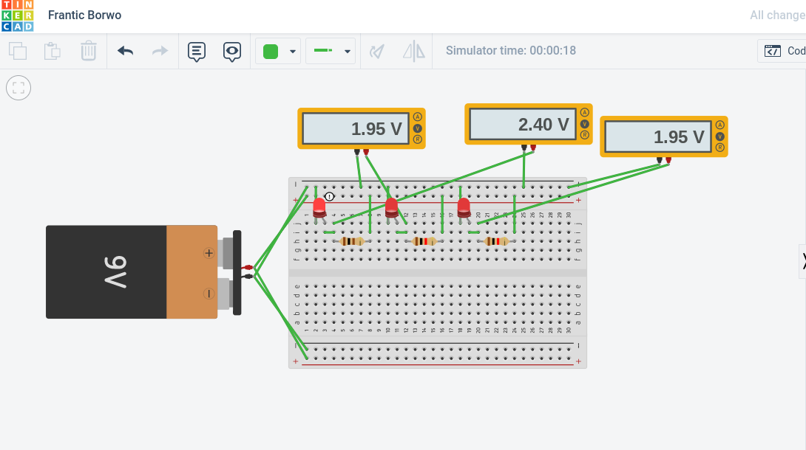

Engineering Notebook
This is a guacamole recipe.I love my cute monkey!

Tyler "Ninja" Blevins is my idol.

Week #1
8/19/2022
Today I learned a few html functions to make a simple website. As well, I played Among Us while I was waiting for the class to start.
Week #2
9/2/22
This week in the class, I learned about all the different types of jobs available in the engineering field, such as software engineers, chemical engineers, or aerospace engineers. Then, we watched a complex video of a Ruth Goldberg machine which transported salt along an intricate circuit. After that, we actually tried to make a similar, but much more simplistic version of the machine in Tinker Cad. In order to better our skills with Tinker Cad, we modeled different household appliances, and I created a Samsung fridge which turned out pretty good even though I didn't win the competition.
This is the fridge I attempted to make in Tinker Cad.
This is the model I made.

Week #3
9/8/22
This week I continued working on my Rube Goldberg machine to pop a ballon, starting with a baseball. To accomplish the task, I used 3 simple machines, an incline plane, an axle, and a lever. My design was pretty barebones but could I think it could've popped the balloon if we built it in real life. Then, we went into groups to compare designs and form one machine combining components of each person's model.
Week #4
9/16/22
This week we actually started to build the Rube Goldberg machine with cardboard. My groupmates were pretty creative with their approaches and ways to make our physical machine. My job was to make all the boxes needed using nets of cubes and prisms. On Thursday, I made a floatation device made of paper to hold weight. My boat had 184 grams of weight on it, and floated for 3:34 seconds.
This is the engineering challenge for this week.
PDF
Week #5
9/23/22
This week, my group and I finished building the Rube Goldberg Machine after a long time working on it. Once we tested it, there were a few errors in our design, such as the distance between the ramp, falling box, and the lever being too far, which we worked out in order for it to work. After making sure everything was foolproof, we added in the needle and balloon. The baseball was pushed down the ramp and after a few seconds, the balloon was popped. All of us felt a amazing and that our hardwork and creativity paid off.
Finalized Rube Goldberg Machine

Week #6
9/31/22
This week, we started learning about a new field of engineering called computer engineering and all the different components of the field. To deepen out knowledge of how computers work and different elements that make them up, we took apart a large laptop. The amount of interconnected systems and modules was very fascinating and I was shocked at how they are made or even thought up. Afterwards, we noted on all the locations of things in the computer like the CPU, RAM, and battery before wrapping up the project by putting it all back together in reverse.
The Disassembled Laptop

Week #7
10/7/22
This week, we focused on bioengineering, which combines engineering and biology to solve problems in the medical and research field. To better understand the field, we researched and designed a prosthetic limb for an animal in Tinkercad. My prosthetic was for the dosal fin of an orca, an extremely large animal I came to find out. It was pretty difficult to create a curved fin in Tinkercad, but eventually I was able to create an object looking similar to the real thing. In my design, the fake dorsal fin would slide and be connected to whatever is left of the fin. As well, the challenge for this week was to make instructions for cooking a peanut butter and jelly sandwich for someone else to follow. My instructions were not very detailed, so they most likely would not work correctly if this was an actual machine task.
Prosthetic Dorsal Fin Design

Week #8
10/14/22
This week, we learned about aerospace engineering. A guest speaker came in on Zoom and taught us about what the field consists of and the opportunities within it. To apply our knowledge, we designed rockets starting from a single bottle in Tinkercad. My design was pretty simple and defiitely could have have been improved. I unfortunately missed out on the challenge for the week, but it from what I have heard, it seemed very fun.

Week #9
10/25/22
This week, we finished building and testing out rockets. My group's had two large wings with smaller bottles connected to the wings. The plan was the put fans on these bottles to make the rocket fly farther. However, the fans were way too heavy and thus hurt more than they helped. When it came time to test out our machine, it completely failed. The angle of launch was quite low, so when the rocket was released, it fell to the ground immediately. This was most likely because it was released from the pump too soon, and because it was too heavy. Because the launch was a disaster, we tried to see if our build worked at all, so we threw it off of the building. When we did so, the rocket fell to the ground rapidly and a wing fell off. Afterwards, we tested it with the pump again with only one wing this time, and it flew slightly farther but mostly just spun in the air.

Week #10
10/28/22
This week, we learned all about environmental engineering. To actually understand the field, the topic we dissected was water filtration and all of its parts. Water treatment plants are very complicated and require multiple stages with the water passing by each and getting cleaner at every level. Then we applied what we learned by making a mini-filtration system with sand, tissues, and two sizes of rocks. The layers of my group's device went as follows, from bottom to top, tissues, sand, small and big rocks, and then more tissues. Because of time, we were only able to run the water through once, but the result was still quite clear.
Water Filter

Week #11
11/5/22
This week, we began learning electrical engineering. The field is quite intricate and involves math, physics, and software engineering. Before starting to apply our knowledge with actual hardware, we created simulations for circuits in Tinkercad to understand how energy flowed and how resistors function. The circuits we made were extremely bare bones and involved a few resistors powering a few led lights. For logic behind how voltage and resistance apply to give the correct ampage to the leds confuses me but they can be solved with mathematical formulas, thus meaning that a high basis in math is required to suceed in electical engineering.
TinkerCad Circuit

Week #12
This week, we heightened out understanding of electical by taking circuits past just TinkerCad and making actual breadboard circuits. Making the circuits in real life was much more difficult than on Tinkercad. Me and my partner made some mistakes while making them. For instance, we mixed up the cathode and anode a couple of times and where they connect too. As well, we linked the cables to the incorrect column, leading to that certain component not having energy flow through it. Overall, creating the circuits was pretty fun and I felt accomplished when the LEDs lit up.
Week #13
This week, we continued to advance our knowledge in electrical engineering by coding on and off switches for LED on the breadboard by coding patterns into an Arduino. We tried out different flows of light and patterns of array by coding in different loops. On Friday, we attempted to solve the problem of if there are more doors or wheels on campus. I was put on Team Wheels and came to the conclusion that there are about 1000 wheels in the school. That seemed like a lot but the Team Doors found over 5000 which clowned over our number.
Week #14
12/2/22
This week, we learned about civil engineering which involves mostly physical, stationary public works such as bridges, dams, or roads. This is also the engineering field that the final will be on, which is to create a bridge over a 24 inch wide gap with only 20 pieces of spaghetti and glue. My group first created TinkerCad designs for bridges that we would create prototypes for. Then, we actually created two of the bridges

For the past three weeks, me and my group have been working on bridges made of only spaghetti and glue. These were our findings: Spaghetti Bridge Final Report
SEMESTER 2
Week #1
This week, we learned about business engineering. This field of engineering is quite interesting to me and is probably my second favorite engineering discipline. To test our abilities, we were put into groups and were tasked with creatubg a product/company and a shark tank pitch for it. Then, we would present and be questioned by the class to decide whether or not our product was good or not. My group chose to present on an app where the user can try on different clothes using a digital avatar. The company was called TryMeOn. The presentation went ok and I feel like we did a good job projecting our product.
Shark Tank Pitch
Week #2
1/20/23
This week, we learned about chemical engineering, a discipline of engineering that covers a wide range of fields from metallurgy, to petroleum, to nano-technology. Learning about it was very interesting and it seems dificult, yet rewarding. To view chemical engineering in the real world, we created oobleck, a substance which is one part water, and two parts corn starch. It becomes a liquid when it is left alone or acted upon with little energy, but then becomes a solid when it is grabbed, hit, or moved. It was very fun to play with it and intriguing to try to understand the physics behind it.
Week #3
1/28/23
This week, we started brainstorming a large engineering project of building a remote controlled car. Me and my partner completed a report which has been attatched.
Remote Controlled Car Project Proposal
Week #4
2/3/23
This week, we continued to work on the startings of the RC Car Project. As such, I completed a TinkerCad design of the car that we might build at a later date. As well, as a fun engineering challenge, we were tasked with making a tall tower out of just a deck of cards. This was extremely difficult with the cards falling down so many times. In the end, only made a card pyramid with 2 layers and a height of 6.4 inches.

ARDUINO CAR PROJECT
6 weeks ago, my partner Roman and I were tasked to create a car using an arduino and 2 motor wheels. At the beggining, the task seemed difficult if not impossible, but by the end, we had accomplished something that I was very pleased with. For the first week, we researched a bunch of different arduino cars and how each of them functioned and what designs they used. We also investigated how the electrical aspect of the car would function and where to connect each wire on the breadboard to allow the motors to receive power and input. At first, we found that a bluetooth module would be best to control the car, but later realized that design was too ambitious and we didn't have an android phone which the bluetooth module required. Then, we started building.
Building was quite a difficult and confusing process. Having only two wheels complicated our design a bit but we improvised by making two wheels from thick cardboard surrounded in tape to provide a smooth surface for the wheels. The next challenge was the wiring, each time we tried there would be a boatload of errors and issues with the connections and it just wouldn't work. Eventually, my partner Roman was able to figure it out and get everything powered. While we did the wiring, we also soldered the motors to wires to allow them to be powered and connected to the breadboard. This process was pretty fun and a brand new experience to me. After the wiring, I created code in the Arduino Web Editor which allowed the car to drive on set loops. The code had a lot of errors, primarily with the car not moving at all when we exeuted the code. We solved the problem by setting the pin numbers in the code to the proper pins in the actual Arduino. Because we weren't able to get the bluetooth module to work, we were only able to control the car through the arduino code. So, we uploaded a preset loop to the Arduino Uno. When we tested the car in the cafeteria, it moved in a pretty sparatic way which was our intentions. Overall, the project was fun to do and it worked out well.